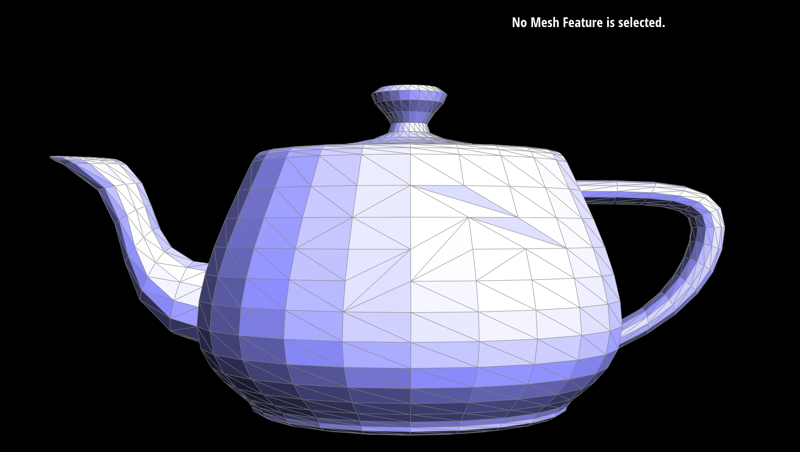
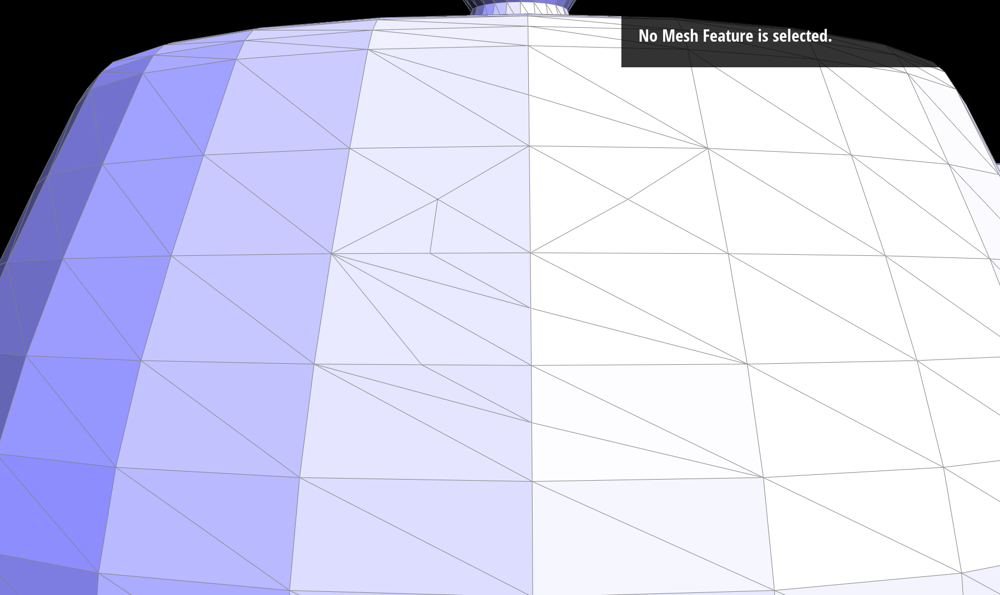
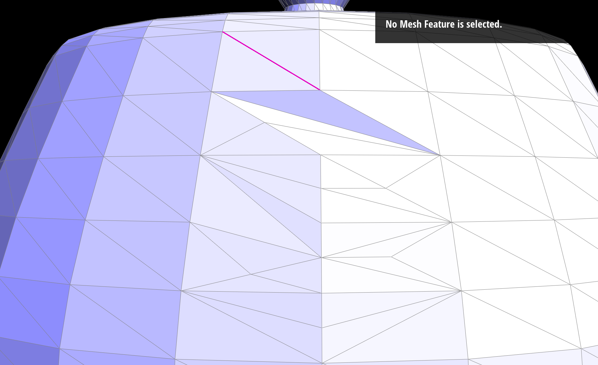

Section I: Bezier Curves and Surfaces
Part 1: Bezier Curves with 1D de Casteljau Subdivision
Briefly explain de Casteljau's algorithm and how you implemented it in order to evaluate Bezier curves.The de Casteljau's algorithm is a recursive subdivision approach that does linear interpolations repeatedly until you get the point on the curve. The way I implemented it is by using a loop to loop over the vector of control points at any level and use linear interpolations to output the control points for the next level, which is 1 less points. This method implemented in evaluateStep is called multiple times until we have that one point on the curve.
Take a look at the provided .bzc files and create your own Bezier curve with 6 control points of your choosing. Use this Bezier curve for your screenshots below.
Show screenshots of each step / level of the evaluation from the original control points down to the final evaluated point. Press E to step through. Toggle C to show the completed Bezier curve as well.
|
|
|
|
|
|
|
|
Show a screenshot of a slightly different Bezier curve by moving the original control points around and modifying the parameter \(t\) via mouse scrolling.
Part 2: Bezier Surfaces with Separable 1D de Casteljau
Briefly explain how de Casteljau algorithm extends to Bezier surfaces and how you implemented it in order to evaluate Bezier surfaces.The algorithm extends to surfaces in a very straightsforward way: first do it for every row control points, and use the evaluated points (evaluated with parameter \(t\)) as control points and run the algorithm on them again (evaluated at a different parameter \(v\)).
I implemented it just like what is described above. I have a evaluateStep method which is the same as Part 1. I wrote a recursive method that call evaluateStep each time until the point vector returned have size of 1, which means we have found the point. I do this for every row control points evaluated at \(u\) and do it again on those evaluated points with parameter \(v\).
Show a screenshot of bez/teapot.bez (not .dae) evaluated by your implementation.
Section II: Triangle Meshes and Half-Edge Data Structure
Part 3: Area-Weighted Vertex Normals
Briefly explain how you implemented the area-weighted vertex normals.I first accessed the Half-Edge of the target vertex, and designed a while-loop that iterates over all the Half-Edges rooted in this vertex. For each of those Half-Edges, I accessed all three vertices of the triangle by dereferencing the next pointers. Using cross product to calculate normal vertor of that triangle and summed all of those normal vectors. These vectors' norms are just the areas of the underlying triangles, so adding them up is doing exactly weighted sum. Finally, I normalized that sum vector and that is the unit normal we are looking for.
Show screenshots of dae/teapot.dae (not .bez) comparing teapot shading with and without vertex normals. Use Q to toggle default flat shading and Phong shading.

|
|
Part 4: Edge Flip
Briefly explain how you implemented the edge flip operation and describe any interesting implementation / debugging tricks you have used.I drew out the before and after mesh with all mesh element marked out. And then wrote code to access all the relevent elements and edit them so that their pointers match my marked illustration. I seperate the code to inner Half-Edge, outter Half-Edge, vertices, edges, and faces for clarity.
Show screenshots of the teapot before and after some edge flips.
|
|

|
Part 5: Edge Split
Briefly explain how you implemented the edge split operation and describe any interesting implementation / debugging tricks you have used.Just like flipping in the above part, I first drew out the before and after mesh. This time, I used a red marker to mark out all the new elements to help me keep track the new stuff that I have to create. Then I carefully reassign all the pointer. Some element have identical neighbor structures so in theory they don't need any change. I first wrote all the reassignment code and marked the ones that I think shouldn't matter and later I proved I was right and deleted those unneccesary lines.
Show screenshots of a mesh before and after some edge splits.
|
|

|
Show screenshots of a mesh before and after a combination of both edge splits and edge flips.
|
|

|
Part 6: Loop Subdivision for Mesh Upsampling
Briefly explain how you implemented the loop subdivision and describe any interesting implementation / debugging tricks you have used.I first looped over all vertices and edges and computed the new vertices' positions from their neighbors. For old vertices, I store the new position in a class attribute of the vertex class. For new vertices, I store that in the attribute of the edge class, because the new vertex is going to be on a edge. And then I do the split and flip according the rule that can yield a perfect subdivision scheme. Finally, I assign the stored new position values to the actual position attribute.
Take some notes, as well as some screenshots, of your observations on how meshes behave after loop subdivision. What happens to sharp corners and edges? Can you reduce this effect by pre-splitting some edges?
The sharp edge becomes more smooth.
Load dae/cube.dae. Perform several iterations of loop subdivision on the cube. Notice that the cube becomes slightly asymmetric after repeated subdivisions. Can you pre-process the cube with edge flips and splits so that the cube subdivides symmetrically? Document these effects and explain why they occur. Also explain how your pre-processing helps alleviate the effects.
The triangle structure make it asymmetric when subdivides into finer meshes. I failed to modify it to be smoother sadly.